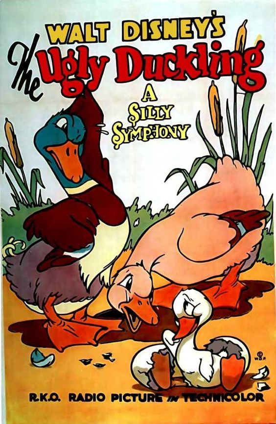

The Ugly Duckling
Once upon a time, in a cozy nest by the pond, a mother duck sat on her eggs. One by one, the eggs hatched, and out came several fluffy yellow ducklings. However, one egg was larger than the others and took longer to hatch. When it finally cracked open, a big, grey, and awkward-looking duckling emerged. The other ducklings and farm animals couldn't help but notice how different he looked and called him the Ugly Duckling.
The Ugly Duckling felt out of place among his siblings and the other animals. They teased him and made him feel unwelcome. Desperate for a sense of belonging, he left the farm and set off on his own. He wandered through the countryside, facing harsh weather and dangerous predators, but everywhere he went, he was met with rejection and loneliness.
One day, while hiding in the reeds by a pond, the Ugly Duckling saw a flock of magnificent swans gliding gracefully across the water. He admired their beauty and longed to be like them, but he knew he could never compare. As winter approached, the Ugly Duckling endured the cold and struggled to survive. When spring finally arrived, he found himself by a different pond, feeling more despondent than ever.
One morning, as he looked at his reflection in the water, he was astonished to see that he had grown into a beautiful swan. No longer the awkward, grey duckling, he spread his wings and took flight, joining a flock of swans that welcomed him with open wings. He had finally found his true family and a place where he belonged.
The Ugly Duckling's transformation into a stunning swan taught him and everyone who had once shunned him an important lesson about the value of inner beauty and the pain of superficial judgment. He lived happily ever after, soaring through the skies with his newfound friends and embracing his true self.